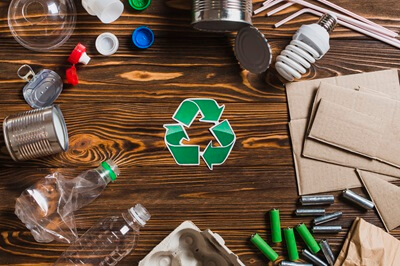
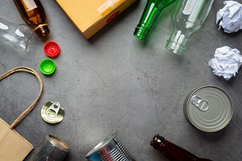

Recycling Business / organization waste
Effective waste management is essential for businesses and organisations looking to reduce costs, improve sustainability, and meet environmental responsibilities. From cutting down on unnecessary packaging to setting up efficient recycling systems, small changes can lead to significant benefits.
This page offers practical tips to help your business minimise waste, comply with regulations, and operate more efficiently—while also doing your part for the planet.
Reuse Old Office Supplies By Introducing An Upcycle Station
Whenever employees have old office furniture, phones, computers, staplers, etc. they are organized and placed in a designated shelving area known as the “Upcycle Station”. When an employee is in need of a “new” office supply, it is protocol to check the Upcycle Station before re-ordering any new items.

Reduce The Amount Of Waste Coming Into Your Facility
When it comes to the 3Rs of recycling and actively increasing your waste diversion rate, the best thing your facility can do is REDUCE. This means focusing on your supply stream and what you bring into your facility. Promote your program to your vendors and work to bring in only items that are recyclable or compostable. If you can control what’s coming into your facility, you have a much better chance at diverting more waste from landfill because the waste your facility is producing is already recyclable, reusable or compostable.
Recycling Tip
Ditch Take Out Coffee Cups
We cannot ask employees to give up their morning coffees, but just think about how many of those cups get tossed in the office waste bins daily.
Instead, opt to provide them with reusable coffee mugs and water bottles. This small change can drastically reduce the amount of coffee cups and plastic bottles filling up your waste and recycling streams

Office behavioural changes
Changing the attitudes of office workers towards the creation of waste in the first place can have a major impact on waste production. Eliminating waste by working more carefully, making fewer errors, or simply considering whether or not to print a document can cut down paper use considerably.
Switching off lights and equipment when leaving the office, making sure that taps are turned off and cutting down on heating and air conditioning can all reduce waste of scarce and expensive resources. Introducing a positive attitude towards reuse and recycling of materials can have similar benefits.